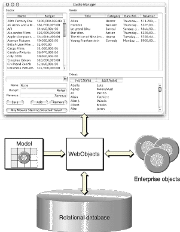

| PATH |

An enterprise object is like any other object in that it couples data with the methods for operating on that data. However, an enterprise object class has certain characteristics that distinguish it from other classes:
In addition to providing classes that manage a set of enterprise objects in memory, WebObjects defines an API to which enterprise objects must conform, as well as default implementations for this API. As a result, you only need to concentrate on the parts of your enterprise object classes specific to your application.
To maximize the reusability and extensibility of your objects, they shouldn't embed knowledge of the user interface or database alongside the business logic. For example, if you embed knowledge of your user interface, you can't reuse the objects because each application's user interface is different. Similarly, if you embed knowledge of your database, you'll have to update your objects every time you modify the database.
If not in the business objects, then where does this knowledge go? It's handled by WebObjects as shown in Figure 3-1.
Figure 3-1 Connecting enterprise objects to data and the user interface
WebObjects provides a database-to-objects mapping, called a model, so your objects are independent of the database. WebObjects also provides an objects-to-interface mapping so they are independent of the user interface. This approach enables you to create libraries of enterprise objects that can be used in as many applications as you need, with any user interface, and with any database server. You're able to concentrate on coding the logic of your business while WebObjects takes care of the rest.
For example, you could create a class of enterprise objects called Customer that defines such business rules as "customers must have a work or home phone number," or "the customer cannot spend more than his credit limit." Without rewriting your business logic, you could use these objects in a public web-based application and an internal customer service application. You could also switch the database that serves the customer data.
A common and useful paradigm for object-oriented applications, particularly business applications, is Model-View-Controller (MVC). Derived from Smalltalk-80, MVC proposes three types of objects in an application, separated by abstract boundaries and communicating with each other across those boundaries.
Model objects represent special knowledge and expertise. For example, model objects can hold a company's data and define the logic that manipulates that data. Model objects are not directly displayed. They often are reusable, distributed, persistent, and portable to a variety of platforms.
Note: WebObjects uses the term "model" differently from MVC. In WebObjects, a model establishes and maintains a correspondence between an enterprise object class and data stored in a relational database. In MVC, model objects represent the special knowledge of the application. |
View objects represent things visible on the user interface (windows, for example, or buttons). A View object is "ignorant" of the data it displays. View objects tend to be very reusable and so provide consistency between applications.
Acting as a mediator between Model objects and View objects in an application is a Controller object. There is usually one per application or window. A Controller object communicates data back and forth between the Model objects and the View objects. Since what a Controller does is very specific to an application, it is generally not reusable even though it often comprises much of an application's code.
Because of the Controller's central mediating role, Model objects need not know about the state and events of the user interface, and View objects need not know about the programmatic interfaces of the Model objects.
From the perspective of this paradigm, enterprise objects are Model objects. However, WebObjects also extends the MVC paradigm. Enterprise objects are also independent of their persistent storage mechanism. Enterprise objects do not need to know about the database that holds their data, and the database doesn't need to know about the enterprise objects formed from its data.
© 2001 Apple Computer, Inc.